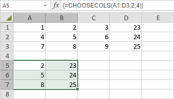

CHOOSECOLS Funkcija
Funkcija CHOOSECOLS je jedna od funkcija za pretragu i referencu. Koristi se za vraćanje kolona iz niza ili reference.
Sintaksa
CHOOSECOLS(array, col_num1, [col_num2], …)
Funkcija CHOOSECOLS ima sledeće argumente:
| Argument | Opis |
|---|---|
| array | Koristi se za postavljanje niza koji sadrži kolone koje treba vratiti u novi niz. |
| col_num1 | Koristi se za postavljanje broja prve kolone koja treba da bude vraćena. |
| col_num2 | Opcioni argument. Koristi se za postavljanje dodatnih brojeva kolona koje treba vratiti. |
Napomene
Imajte u vidu da je ovo formula niza. Da biste saznali više, pročitajte članak Umetanje formula niza.
Kako primeniti funkciju CHOOSECOLS.
Primeri
Slika ispod prikazuje rezultat koji vraća funkcija CHOOSECOLS.
